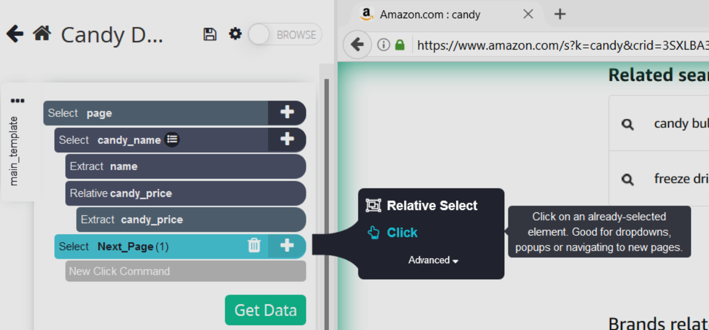

üóÉÔ∏è
Scraping Multiple Pages
Although scraping one page is useful, a website often has multiple pages that you will want to extract data from. This tutorial will teach you how to navigate multiple pages using ParseHub.
1.
Where do I start?
Although the program does accurately extract data from the Amazon page, it only does so for one page. To make ParseHub extract data from multiple pages, you’ll need to utilize the click command.
2.
New Select Command
First, you need to select the element to be clicked, so add a select command selecting the next page button.
3.
Deleting the Extras
You don’t want to extract anything from this element, so click the download icon within the command to see the extract commands and delete them. Click the trash icon to delete both extract commands.

4.
Adding the Click Command
Rename “selection1” to “Next_Page” to accurately reflect what is selected, and then add the click command to the selection. A click setup page will pop up asking if the click is for a next page button. Click yes.

5.
Repeating the Code
It will then ask how many times the previous code (extracting candy name and price) should be repeated. Since there are 7 pages, repeat the code 6 more times.
6.
Scraping Time!
To actually extract the data, click the “Get Data” button again, and save the data as a JSON file. Congratulations! You’ve learned how to web scrape using ParseHub!